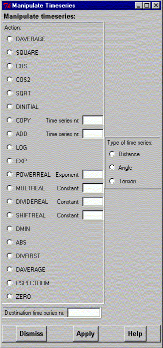

**************************************************************************
Manipulate Time Series Widget
Leif Laaksonen CSC 1997
**************************************************************************
Manipulate the distance, angle and torsion time series through the following operations:
Types of operations (manipulations):
DAVErage ; Q(t) = Q(t) -
SQUAre ; Q(t) = Q(t) ** 2
COS ; Q(t) = cos(Q(t))
COS2 ; Q(t) = 3*cos(Q(t))**2 - 1
SQRT ; Q(t) = sqrt(Q(t))
DINItial ; Q(t) = Q(t) - Q(0)
COPY nr ; Q(t) = Q2(t)
ADD nr ; Q(t) = Q(t) + Q2(t)
LOG ; Q(t) = log(Q(t))
EXP ; Q(t) = exp(Q(t))
POWer real ; Q(t) = Q(t) ** real
MULT real ; Q(t) = real * Q(t)
DIVIde real ; Q(t) = Q(t) / real
SHIFt real ; Q(t) = Q(t) + real
DMIN ; Q(t) = Q(t) - Q(min)
ABS ; Q(t) = abs(Q(t))
DIVFirst ; Q(t) = Q(t) / Q(0)
DIVMaximum ; Q(t) = Q(t) /max(Q(t))
PSPEctrum nr ; Power spectrum
ZERO ; Q(t) = 0.0
Click on the radio button for the desired operation. If the operation requires a further value or index, please fill it in the input widget. Choose the distance, angle or torsion option.
Fill in the number index for the desired time series.

Line command: see manipulate command
**************************************************************************
LUL/1997
**************************************************************************